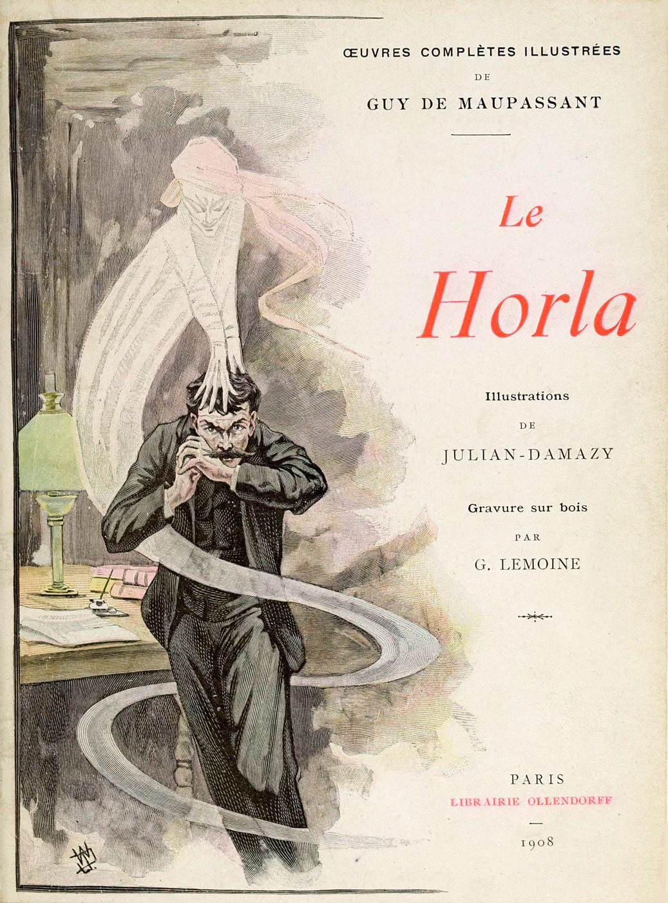
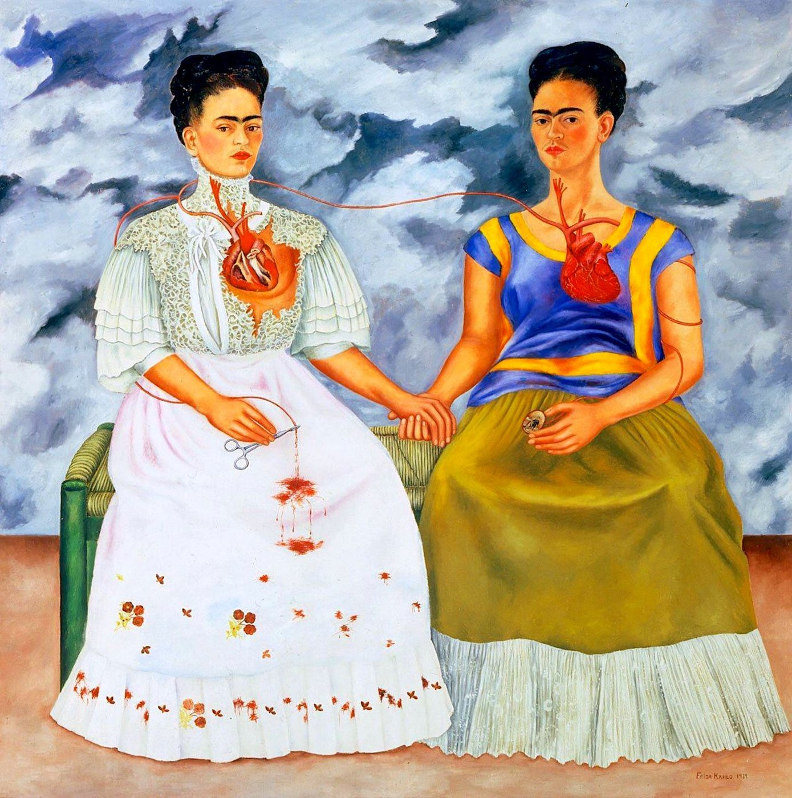
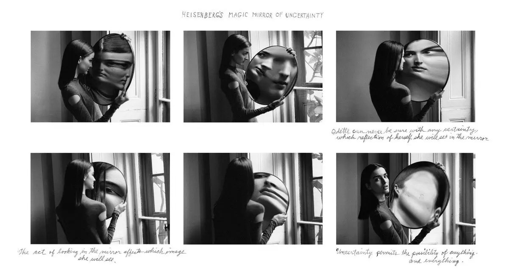

Las representaciones del doble adoptan diferentes corporalidades y significaciones en las obras artísticas seleccionadas. De esta manera, el cuerpo es un territorio en disputa y su tensión permite evidenciar conflictos de identidad.



Luego de realizar el trabajo comparativo de las obras artísticas seleccionadas se ha logrado conocer mejor las representaciones del doble y la corporalidad que el otro manifiesta en cada caso. Al considerar estas obras dentro de un corpus interartístico, se visibiliza que el doble puede representarse de formas muy diversas: como un ente incorpóreo y abstracto que atormenta al personaje en “El Horla”, como un autorretrato de sí misma en Las dos Fridas o como el reflejo cambiante de Odette en el espejo de El espejo mágico de la incertidumbre del Dr. Heisenberg.
Así, el análisis permitió comprobar que el tema del desdoblamiento atraviesa los siglos y los lenguajes artísticos como la literatura, la pintura y la fotografía. Solo al trabajar las obras seleccionadas en conjunto se vuelve visible que las representaciones del doble no responden a una única forma, ni a una sola representación corporal. Por el contrario, se construye de manera diferente según los recursos propios de cada lenguaje artístico: mediante las descripciones narrativas, la composición pictórica o la manipulación especular. De esta manera, la perspectiva comparada adoptada permite pensar el tema de la otredad más allá de los límites de un solo lenguaje artístico o época.